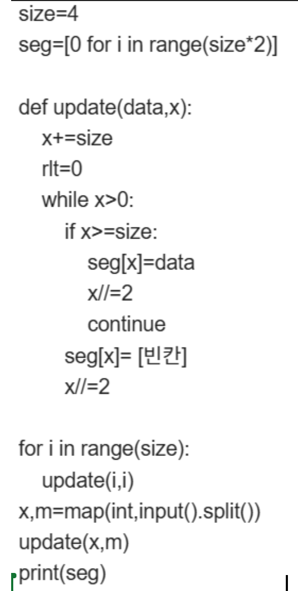

Q1. 파이썬은 x, y라는 변수가 있을때, (x,y=y,x) 같은 작업이 가능하다. 이런 작업이 가능한 이유가 무엇인가?
1. 파이썬은 변수 타입이 자동으로 변환되기 때문에
2. 파이썬은 변수가 주소를 저장하는 방식으로 저장되기 때문에
3. 관련 자체 함수가 내장되어 있기 때문에
Q2. 파이썬에는 set이라는 자료형이 있다. 이 자료형의 특징으로 틀린 것은?
1. add, update같은 함수를 통해 값을 추가 할 수 있다.
2. 내부에 어떤 값이 들어있는지 확인하는데 대부분 O(1)의 시간복잡도로 확인가능하다.
3. set은 인덱스를 사용해 접근 가능하다.
Q3. 다음은 정점이 7개인 세그먼트트리 update 함수를
구현하고 사용하는 것이다. 빈칸에 들어갈 코드로 알맞은것은?

1. seg[data]=seg[x+size]+seg[x*2]
2. seg[x]=0
3. seg[x*2]+seg[x*2+1]
Q4. 다이직스트라 알고리즘의 대한 설명으로 틀린것은?
1. 한 정점에서 다른 모든 정점에 대한 최단거리를 구할 수 있다.
2. 초기에 각 정점으로 가는 최단거리 값은 파이썬 기준 'INF'로 저장한다.
3. 다이나믹 프로그래밍의 성향을 띈다.
Q5. 유니온파인드 알고리즘에 대한 설명으로 올바른 것은?
1. 한 정점이 다른 한 정점과의 거리를 알 수 있다.
2. 한 정점이 어떤 트리에 연결되었는지 확인 할 수 있다.
3. 서브트리에 정점이 몇개 인지는 알아낼 수 없다.